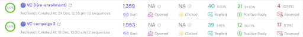
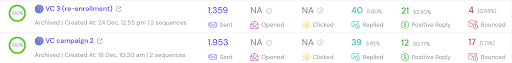

The Hypothesis: Target CTOs at VC-backed companies that hadn't raised or grown in 12+ months. They might want to join a funded startup where they could focus purely on building.
The Twist: Our eventual CTO didn't fit the pattern - he was married to his co-founder, and that's why they couldn't raise! But the approach generated tons of valuable conversations.